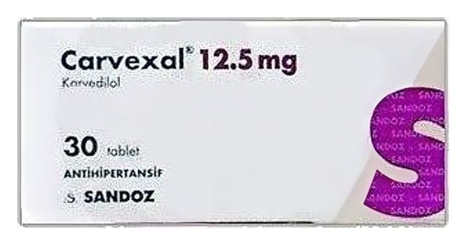

Carvexal 12.5 mg Tablet, 30 Adet

Ne için kullanılır
KT · Bölüm 1CARVEXAL, karvedilol adı verilen bir etkin madde içerir. Bu, “beta-blokörler” adı verilen * : bir gruba dahildir. CARVEXAL aşağıdaki durumların tedavisinde kullanılır: e Yüksek kan basıncı (hipertansiyon) e Anjina (kalbiniz yeterince oksijen almadığı zaman oluşan göğüs ağrısı veya rahatsızlık) e Kronik kalp yetmezliği | Doktorunuz CARVEXAL dışında durumunuzu tedavi etmek için başka ilaç da verebilir. 2. CARVEXAL 'i kullanmadan önce dikkat edilmesi gerekenler | CARVEXAL'i aşağıdaki durumlarda KULLANMAYINIZ | Eğer: e Karvedilol veya CARVEXAL'in içindekilerden herhangi birine alerjiniz varsa e Astım veya başka akciğer hastalıkları sebebiyle göğsünüzde hırıltı yaşadıysanız. e Damardan verilen ilaçlar (intravenöz) ile tedavi edilen, ciddi sıvı tutulumu yaşıyorsanız 1/7
(ellerin, bileklerin ve ayakların şişmesi). Site e Karaciğer rahatsızlığınız varsa. : > e Kalbinizde sorun varsa (örneğin “kalp bloğu” veya kalp atışının yavaşlaması). CARVEXAL belli türde kalp sorunu olan kişiler için daha az uygundur. e Kan basıncınız düşükse, e Metabolik asidoz (kanınızın asit değeri yüksekse) | e Böbrek üstü bezlerinizde büyüme varsa (feokromositoma) e Deride kızarıklık, döküntü veya bir deri reaksiyonu (Steven Johnson sendromu (SJS) ve Toksik Epidermal Nekroliz (TEN)) görüldüğü takdirde CARVEXAL kullanmayı derhal bırakınız. CARVEXAL'i aşağıdaki durumlarda DİKKATLİ KULLANINIZ Eğer: | e Böbreklerinizde rahatsızlığınız varsa. e Diyabetiniz varsa (kan şekerinin yüksek olması). e Kontakt lens kullanıyorsanız. . e Geçmişte tiroid ile ilgili rahatsızlık geçirdiyseniz. e Ciddi alerjik reaksiyon geçirdiyseniz (örneğin, vücudun aniden şişmesi ve bunun sonucu olarak nefes almada ve yutkunmada güçlük, ellerin, ayakların ve bileklerin şişmesi, şiddetli döküntü). e Alerjiniz varsa ve sizi duyarlı hale getirecek tedavi alıyorsanız. e El ve ayak parmaklarınızdaki kan dolaşımınızda sorunlar varsa (Raynaud fenomeni) e Beta blokör grubundan ilaçlar aldıktan sonra, “sedef” adı verilen deri hastalığı | geçirdiyseniz. Bu uyarılar, geçmişteki herhangi bir dönemde dahi olsa sizin için geçerliyse lütfen doktorunuza danışınız. i CARVEXAL 'in yiyecek ve içecek ile kullanılması CARVEXAL su ile alınmalıdır. Kronik kalp yetmezliği hastalarında CARVEXAL yiyecekle birlikte verilmelidir. Hamilelik İlacı kullanmadan önce doktorunuza veya eczacınıza danışınız. CARVEXAL'in hamilelerde kullanımına ilişkin yeterli veri yoktur. CARVEXAL gerekli olmadıkça hamilelikte kullanılmamalıdır. Tedaviniz sırasında hamile olduğunuzu fark ederseniz hemen doktorunuza veya eczacınıza danışınız. Emzirme İlacı kullanmadan önce doktorunuza veya eczacınıza danışınız. CARVEXAL'in insanda süte geçip geçmediği bilinmemektedir. Emzirmenin ya da CARVEXAL tedavisinin kesilip kesilmeyeceği kararı, emzirmenin çocuk için yararı ile CARVEXAL tedavisinin kadın için yararı dikkate alınarak verilmelidir. 2/7
Araç ve makine kullanımı eğe CARVEXAL kullanırken, baş dönmesi yaşayabilirsiniz. Bunun, tedaviye başladığınızda veya tedavinizde değişiklik yapıldığında ve alkol tükettiğinizde görülme ihtimali daha yüksektir. Eğer baş dönmesi yaşıyorsanız, araç veya herhangi bir alet veya makine kullanmayınız. | CARVEXAL alırken, araba kullanmanızı, alet veya makine kullanmanızı etkileyebilecek herhangi bir sorun yaşarsanız, doktorunuza danışınız.
CARVEXAL 'in içeriğinde bulunan bazı yardımcı maddeler hakkında önemli bilgiler
CARVEXAL laktoz içermektedir. Eğer daha önceden doktorunuz tarafından bazı şekerlere
karşı hassasiyetiniz olduğu söylenmişse bu tıbbi ürünü almadan önce doktorunuzla temasa
geçiniz.
Diğer ilaçlar ile birlikte kullanımı
Özellikle, aşağıdaki ilaçları kullanıyorsanız doktorunuza veya eczacınıza bunlar hakkında
bilgi veriniz.
e İdrar söktürücüler (diüretikler), kalsiyum kanalı blokörleri (örneğin diltiazem veya verapamil) dahil olmak üzere kalbiniz ve kan basıncınızın tedavisinde kullandığınız diğer ilaçlar
e İzokarboksit ve fenelzin gibi monoamin oksidaz inhibitörleri (MAOI) (depresyon tedavisinde kullanılır).
e İnsülin ve metformin gibi diyabet için kullanılan ilaçlar
e Klonidin (yüksek kan basıncını, migren ve menopoz sırasındaki ateş basmalarını tedavi etmek için'kullanılır).
e Rifampisin (enfeksiyonların tedavisi için kullanılır)
e Simetidin (sindirim güçlüğü, mide yanması ve mide ülserlerini tedavi etmek için kullanılır)
e Siklosporin (organ nakli sonrasında kullanılır)
e Fluoksetin (depresyon tedavisi için kullanılır)
e Non steroidal antiinflamatuvar ilaçlar (aspirin, indometazin ve ibuprofen gibi)
e Beta blokörler (göğüste sıkışma hissi, astıma bağlı hırıltı veya diğer göğüs ile ilgili rahatsızlıkların tedavisinde kullanılan salbutamol ve terbutalin sülfat gibi ilaçlar)
Eğer reçeteli ya da reçetesiz herhangi bir ilacı şu anda kullanıyorsanız veya son zamanlarda
kullandınız ise lütfen doktorunuza veya eczacınıza bunlar hakkında bilgi veriniz.